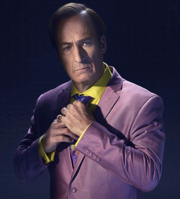

About Volgren
Founded on the belief that innovation has no limits, Volgren represents the next evolution of intelligent design and performance engineering
What began as a small research collective of engineers and designers soon transformed into a bold vision — to create machines that merge precision, technology, and emotion. Guided by our philosophy of Zenith Engineering, every Volgren concept pushes the boundaries of what a vehicle can be.
Our flagship prototypes — from the stealth-inspired A.Z.I.R.A., to the aerodynamically radical Sabertooth, and the elegant convertible Xynith — are more than machines. They’re living proof that imagination and engineering can coexist without compromise.
At Volgren, we don’t follow trends.We redefine them.
Volgren — The Future Accelerated. As part of a subsidary of the Legendary company,
Our Mission is to ensure our products, forged from the same materials that created monsters be produced in limited numbers of only 100 with technology so advanced no one knows it exists at the palm of your hands, YOU.CONTROL.THIS.EXISTENCE
PS: Volgren is highly inspired by Audi and it DOES NOT have any real connections with the real Volgren which makes bus bodies and its an australian company.
Click here to view our products
Our Leadership Team
| Name | Position | Responsibilities | |
|---|---|---|---|
| Dr. Gregory House | Chief Executive Officer (CEO) | Founder and visionary leader behind Volgren’s next-gen engineering philosophy, “Zenith Engineering.” Oversees innovation and company direction. Once part of a notorius crew at a certain hospital, House decided he will continue his career with us after he faked his death just to see his "soon to be deceased" friend who got his terminal illness treated by us with Volgren technology | |
|  | Mr. Saul Goodman | Chief Operations Officer (COO) | Manages the operational and manufacturing side of Volgren IoT Systems, ensuring flawless integration between automotive and smart systems. He's the guy that knows a guy whom knows another guy if you're willing to talk to him. Saul or Jimmy in this case was a lawyer for the notorius walter white that died back in 2011. However for Saul goodman after he was arrested and sentenced to 86 years, we bailed him out of the penitentiary to work with us. |
 |
Mr. Los Santos Customs Guy | Chief Financial Officer (CFO) | Heads AI integration, IoT research, and system architecture. Designs the core technology that powers all Volgren IoT devices.He also does part time jobs as a mechanic at los santos in LSCustoms. Offers to charge very little on servicing or repairing customer's vehicles which is why he has the role as a CFO |